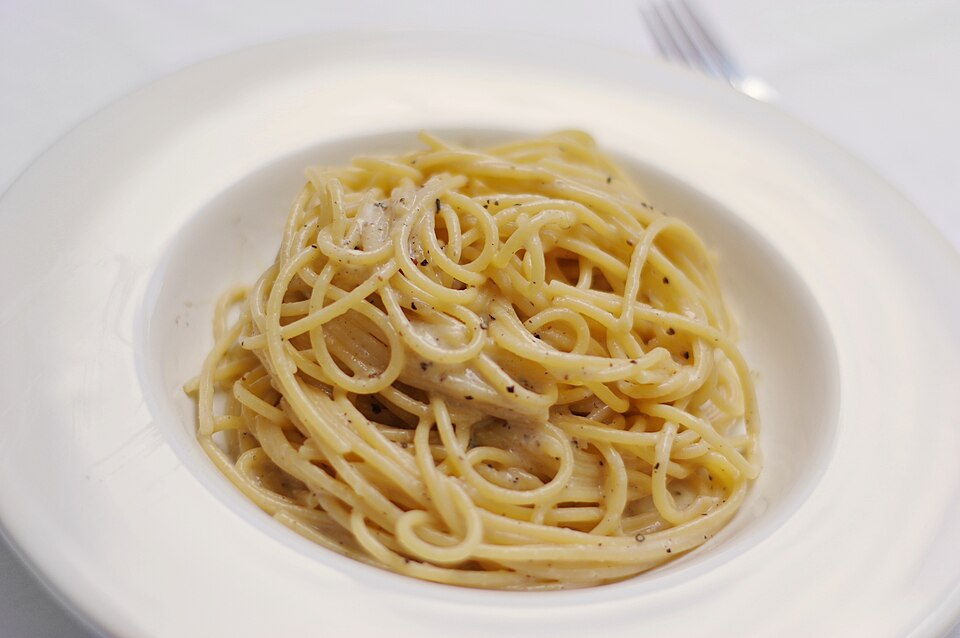

cacio e pepe

Cacio e Pepe is a legendary Roman dish of spaghetti, Pecorino cheese, and black pepper. It uses the starchy pasta
water to create a deceptively rich and creamy sauce. It is simple to make but delivers a sophisticated, salty,
and spicy flavor.
Ingredient
- 8 oz spaghetti or bucatini
- 1 cup finely grated Pecorino Romano cheese
- 1 tablespoon coarsely ground black pepper
Steps
- Cook Pasta: Boil pasta until very al dente (a couple of minutes less than package instructions). Reserve about
1.5 cups of the starchy cooking water, then drain the pasta.
- Toast Pepper: In the empty pot, toast the ground pepper over medium heat for about one minute until fragrant.
- Make Paste: Turn off the heat. Add ½ cup of the reserved hot pasta water to the pot and scrape up the pepper. In
a separate bowl, mix the Pecorino Romano with about ¼ cup of the reserved water to create a creamy paste.
- Combine: Add the pasta to the pot with the pepper water. Slowly mix in the cheese paste, tossing constantly. Add
more reserved pasta water a tablespoon at a time until a smooth, creamy sauce coats the noodles. Serve
immediately.
Homepage